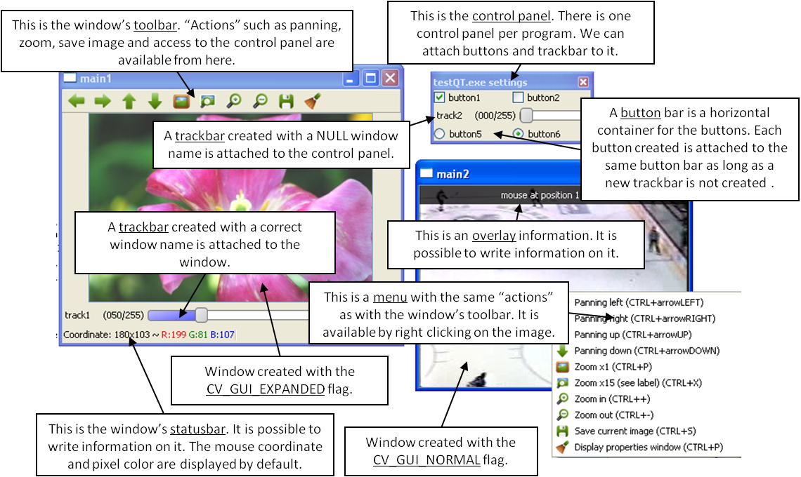

Qt New Functions
Overview
// structs struct cv::QtFont; // global functions void cv::addText( const Mat& img, const String& text, Point org, const QtFont& font ); void cv::addText( const Mat& img, const String& text, Point org, const String& nameFont, int pointSize = -1, Scalar color = Scalar::all(0), int weight = QT_FONT_NORMAL, int style = QT_STYLE_NORMAL, int spacing = 0 ); int cv::createButton( const String& bar_name, ButtonCallback on_change, void* userdata = 0, int type = QT_PUSH_BUTTON, bool initial_button_state = false ); void cv::displayOverlay( const String& winname, const String& text, int delayms = 0 ); void cv::displayStatusBar( const String& winname, const String& text, int delayms = 0 ); QtFont cv::fontQt( const String& nameFont, int pointSize = -1, Scalar color = Scalar::all(0), int weight = QT_FONT_NORMAL, int style = QT_STYLE_NORMAL, int spacing = 0 ); void cv::loadWindowParameters(const String& windowName); void cv::saveWindowParameters(const String& windowName); int cv::startLoop( int(*)(int argc, char*argv[]) pt2Func, int argc, char* argv [] ); void cv::stopLoop();
Detailed Documentation
This figure explains new functionality implemented with Qt* GUI. The new GUI provides a statusbar, a toolbar, and a control panel. The control panel can have trackbars and buttonbars attached to it. If you cannot see the control panel, press Ctrl+P or right-click any Qt window and select Display properties window.
- To attach a trackbar, the window name parameter must be NULL.
- To attach a buttonbar, a button must be created. If the last bar attached to the control panel is a buttonbar, the new button is added to the right of the last button. If the last bar attached to the control panel is a trackbar, or the control panel is empty, a new buttonbar is created. Then, a new button is attached to it.
See below the example used to generate the figure:
int main(int argc, char *argv[]) { int value = 50; int value2 = 0; namedWindow("main1",WINDOW_NORMAL); namedWindow("main2",WINDOW_AUTOSIZE | CV_GUI_NORMAL); createTrackbar( "track1", "main1", &value, 255, NULL); String nameb1 = "button1"; String nameb2 = "button2"; createButton(nameb1,callbackButton,&nameb1,QT_CHECKBOX,1); createButton(nameb2,callbackButton,NULL,QT_CHECKBOX,0); createTrackbar( "track2", NULL, &value2, 255, NULL); createButton("button5",callbackButton1,NULL,QT_RADIOBOX,0); createButton("button6",callbackButton2,NULL,QT_RADIOBOX,1); setMouseCallback( "main2",on_mouse,NULL ); Mat img1 = imread("files/flower.jpg"); VideoCapture video; video.open("files/hockey.avi"); Mat img2,img3; while( waitKey(33) != 27 ) { img1.convertTo(img2,-1,1,value); video >> img3; imshow("main1",img2); imshow("main2",img3); } destroyAllWindows(); return 0; }
Global Functions
void cv::addText( const Mat& img, const String& text, Point org, const QtFont& font )
Draws a text on the image.
The function addText draws text on the image img using a specific font font (see example cv::fontQt)
Parameters:
| img | 8-bit 3-channel image where the text should be drawn. |
| text | Text to write on an image. |
| org | Point(x,y) where the text should start on an image. |
| font | Font to use to draw a text. |
void cv::addText( const Mat& img, const String& text, Point org, const String& nameFont, int pointSize = -1, Scalar color = Scalar::all(0), int weight = QT_FONT_NORMAL, int style = QT_STYLE_NORMAL, int spacing = 0 )
Draws a text on the image.
Parameters:
| img | 8-bit 3-channel image where the text should be drawn. |
| text | Text to write on an image. |
| org | Point(x,y) where the text should start on an image. |
| nameFont | Name of the font. The name should match the name of a system font (such as Times*). If the font is not found, a default one is used. |
| pointSize | Size of the font. If not specified, equal zero or negative, the point size of the font is set to a system-dependent default value. Generally, this is 12 points. |
| color | Color of the font in BGRA where A = 255 is fully transparent. |
| weight | Font weight. Available operation flags are : cv::QtFontWeights You can also specify a positive integer for better control. |
| style | Font style. Available operation flags are : cv::QtFontStyles |
| spacing | Spacing between characters. It can be negative or positive. |
int cv::createButton( const String& bar_name, ButtonCallback on_change, void* userdata = 0, int type = QT_PUSH_BUTTON, bool initial_button_state = false )
Attaches a button to the control panel.
The function createButton attaches a button to the control panel. Each button is added to a buttonbar to the right of the last button. A new buttonbar is created if nothing was attached to the control panel before, or if the last element attached to the control panel was a trackbar or if the QT_NEW_BUTTONBAR flag is added to the type.
See below various examples of the cv::createButton function call: :
createButton(NULL,callbackButton);//create a push button "button 0", that will call callbackButton. createButton("button2",callbackButton,NULL,QT_CHECKBOX,0); createButton("button3",callbackButton,&value); createButton("button5",callbackButton1,NULL,QT_RADIOBOX); createButton("button6",callbackButton2,NULL,QT_PUSH_BUTTON,1); createButton("button6",callbackButton2,NULL,QT_PUSH_BUTTON|QT_NEW_BUTTONBAR);// create a push button in a new row
Parameters:
| bar_name | Name of the button. |
| on_change | Pointer to the function to be called every time the button changes its state. This function should be prototyped as void Foo(int state,*void); . state is the current state of the button. It could be -1 for a push button, 0 or 1 for a check/radio box button. |
| userdata | Pointer passed to the callback function. |
| type | Optional type of the button. Available types are: (cv::QtButtonTypes) |
| initial_button_state | Default state of the button. Use for checkbox and radiobox. Its value could be 0 or 1. (Optional) |
void cv::displayOverlay( const String& winname, const String& text, int delayms = 0 )
Displays a text on a window image as an overlay for a specified duration.
The function displayOverlay displays useful information/tips on top of the window for a certain amount of time delayms. The function does not modify the image, displayed in the window, that is, after the specified delay the original content of the window is restored.
Parameters:
| winname | Name of the window. |
| text | Overlay text to write on a window image. |
| delayms | The period (in milliseconds), during which the overlay text is displayed. If this function is called before the previous overlay text timed out, the timer is restarted and the text is updated. If this value is zero, the text never disappears. |
void cv::displayStatusBar( const String& winname, const String& text, int delayms = 0 )
Displays a text on the window statusbar during the specified period of time.
The function displayStatusBar displays useful information/tips on top of the window for a certain amount of time delayms. This information is displayed on the window statusbar (the window must be created with the CV_GUI_EXPANDED flags).
Parameters:
| winname | Name of the window. |
| text | Text to write on the window statusbar. |
| delayms | Duration (in milliseconds) to display the text. If this function is called before the previous text timed out, the timer is restarted and the text is updated. If this value is zero, the text never disappears. |
QtFont cv::fontQt( const String& nameFont, int pointSize = -1, Scalar color = Scalar::all(0), int weight = QT_FONT_NORMAL, int style = QT_STYLE_NORMAL, int spacing = 0 )
Creates the font to draw a text on an image.
The function fontQt creates a cv::QtFont object. This cv::QtFont is not compatible with putText .
A basic usage of this function is the following: :
QtFont font = fontQt("Times"); addText( img1, "Hello World !", Point(50,50), font);
Parameters:
| nameFont | Name of the font. The name should match the name of a system font (such as Times*). If the font is not found, a default one is used. |
| pointSize | Size of the font. If not specified, equal zero or negative, the point size of the font is set to a system-dependent default value. Generally, this is 12 points. |
| color | Color of the font in BGRA where A = 255 is fully transparent. Use the macro CV_RGB for simplicity. |
| weight | Font weight. Available operation flags are : cv::QtFontWeights You can also specify a positive integer for better control. |
| style | Font style. Available operation flags are : cv::QtFontStyles |
| spacing | Spacing between characters. It can be negative or positive. |
void cv::loadWindowParameters(const String& windowName)
Loads parameters of the specified window.
The function loadWindowParameters loads size, location, flags, trackbars value, zoom and panning location of the window windowName.
Parameters:
| windowName | Name of the window. |
void cv::saveWindowParameters(const String& windowName)
Saves parameters of the specified window.
The function saveWindowParameters saves size, location, flags, trackbars value, zoom and panning location of the window windowName.
Parameters:
| windowName | Name of the window. |